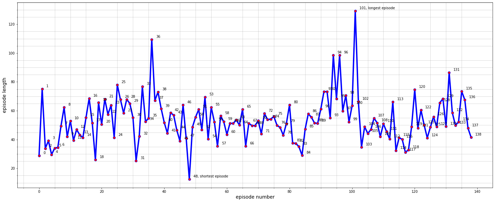
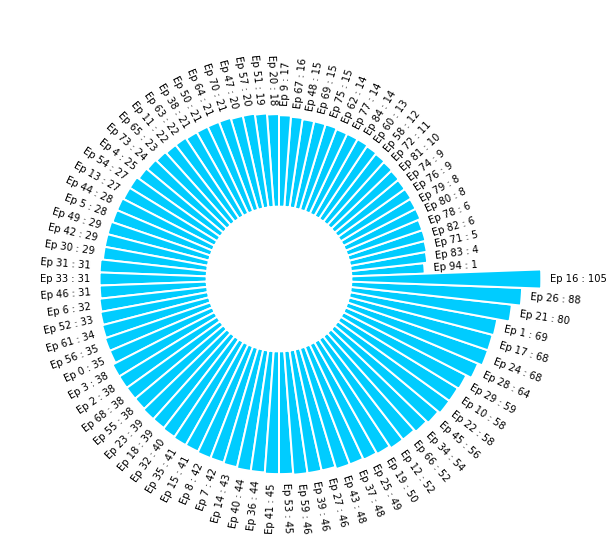
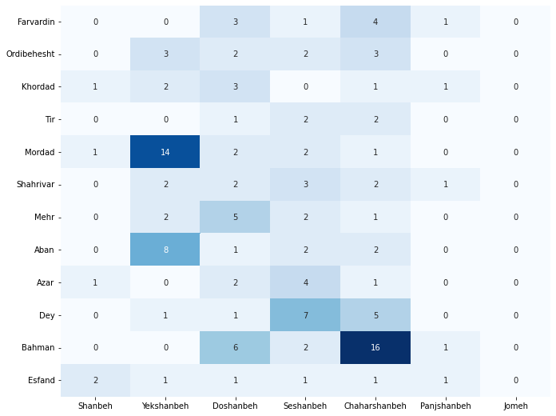
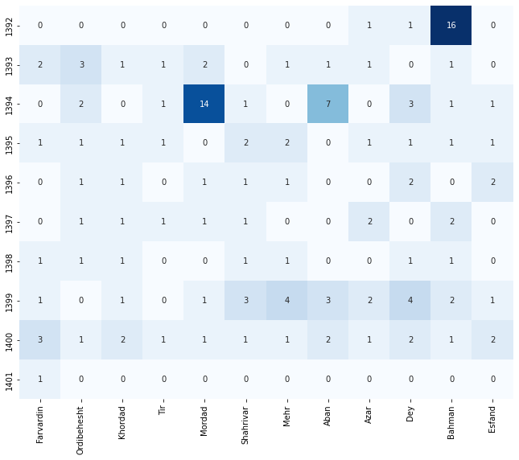
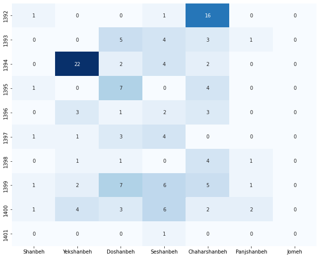
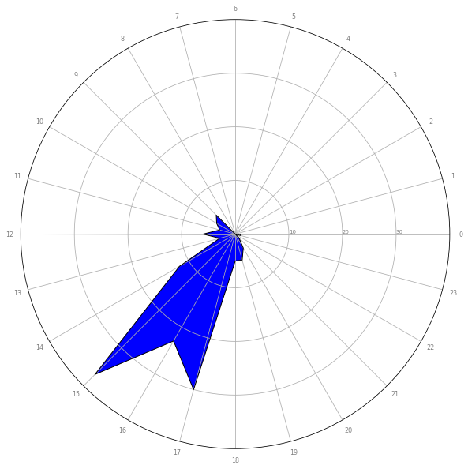

یا به صفحه رادیوگیک در anchor.fm برید :
یا وقتی آدرس زیر رو باز کنید :
میبینید که لیست اپیزود های رادیوگیک نمایش داده میشه. به شکل عجیبی تاریخ انتشار برخی از اپیزود ها در همه موارد بالا به نظر میاد که درست نباشه. مثلا در لینک های بالا نوشته شده که رادیوگیک شماره ۱۴ در August 16, 2012 منتشر شده و رادیوگیک شماره ۲ در January 16, 2014! به هر حال من از این دیتا استفاده کردم. این مشکل تاریخ بیشتر در پادکست های خیلی قدیمی وجود داره و اینکه دونه دونه بخوام باز کنم و ببینم داخل رادیو در مورد تاریخ انتشار صحبت شده یا نه کار سختیه. بنابراین به همین دیتا اکتفا کردم.در زمان نگارش این مقاله، تعداد ۱۳۹ اپیزود (از شماره ۰ تا ۱۳۸) از رادیوگیک منتشر شده است. مجموع زمان تمام اپیزود ها ۴۴۶۲۲۵ ثانیه یا ۷۴۳۷ دقیقه یا ۱۲۴ ساعت یا ۵ روز است! یعنی اگر بدون توقف از شماره ۰ شروع کنید، تقریبا ۵ روز طول میکشه تا تمام اپیزود ها رو بشنوید! همچنین به صورت میانگین زمان یک اپیزود ۳۲۱۰ ثانیه یا ۵۳ دقیقه است.نمودار زیر، محور افقی (x) شماره هر اپیزود و محور عمودی (y) مدت زمان هر اپیزود به دقیقه رو نشون میده :

طولانی ترین اپیزود رادیوگیک شماره ۱۰۱ است که ۷۷۵۹ ثانیه و کوتاه ترین اپیزود هم شماره ۴۸ است که ۷۴۸ ثانیه است. تصویر با کیفیت تر از نمودار بالا رو از این لینک میتونید مشاهده کنید.نمودار زیر پربحثترین اپیزود ها رو نشون میده. برای مثال Ep 16 : 105 نشون میده اپیزود شماره ۱۶ تعداد ۱۰۵ کامنت در سایت jadi.net داشته.

اگر ابر کلمات توضیحات کوتاه هر اپیزود رو رسم کنیم نتیجه به صورت زیر میشه :
همچنین اگر کلمات توقف رو حذف نکنیم نتیجه به صورت زیر میشه :
نمودار زیر نشون میده در هر ماه از سال و هر روز از هفته چه تعداد اپیزود منتشر شده :

نمودار زیر نشون میده در ماه های مختلف از سال های مختلف چه تعداد اپیزود منتشر شده :

نمودار زیر نشون میده در روز های مختلف هفته از سال های مختلف چه تعداد اپیزود منتشر شده :

در نمودار های بالا هم اون مشکل تاریخ که در ابتدا گفتم کاملا مشاهده میشه که برای پادکست های قدیمی هستند. مثلا اینکه جادی در مرداد سال ۱۳۹۴ تعداد ۱۴ اپیزود منتشر کرده باشه خیلی بعید به نظر میرسه! به نظر میاد دیتای سال ۱۳۹۴ و ۱۳۹۲ خیلی معتبر نباشه اما برای بقیه سال ها رو که چند تاشون رو دستی بررسی کردم تاریخ ها درست هستند.نمودار زیر نشون در چه ساعاتی از شبانهروز بیشترین تعداد پادکست منتشر شده :

از نمودار بالا میشه فهمید که از ساعت ۱۵ الی ۱۷ بیشترین تعداد اپیزود منتشر شده!اگر نمودار دیگهای رو دوست دارید که رسم کنم در کامنت ها بگید 🙂
nb.neighbours()
| title | date | |
|---|---|---|
| prev | کرال پشت در متن آهنگهای فارسی! | ۱۴۰۰/۱۲ |
| next | مروری بر نظرات نامحبوب در توییتر فارسی! | ۱۴۰۱/۰۱ |
{kind=link}